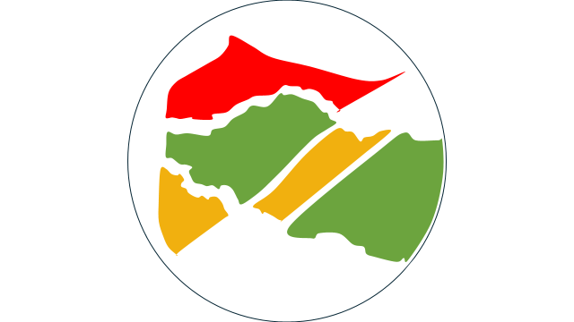

anonMrcn
Informativa sulla Privacy
Ai sensi dell’articolo 13 del Regolamento (UE) 2016/679 (GDPR)
Ultimo aggiornamento: 3 ottobre 2026
1. Titolare e contatti
Il titolare del trattamento è l’autore e amministratore di anonMrcn, progetto artistico indipendente e senza scopo di lucro, sostenuto tramite libere donazioni su Produzioni dal Basso. Per richieste sulla privacy, accesso ai dati o cancellazione puoi scrivere a anonmrcn@gmail.com.
2. Dati trattati e finalità
Quando richiedi un token possono essere trattati username, email, via o zona generica e un punto geografico. Servono esclusivamente a valutare la richiesta, inviare il token, creare la location approssimativa e permettere la partecipazione al progetto.
L’indirizzo deve essere inserito senza numero civico. Se selezioni un punto sulla mappa, prima del salvataggio il sistema lo sposta automaticamente di circa 250–400 metri: le coordinate esatte non vengono conservate. Un codice pseudonimo derivato dall’indirizzo IP è usato soltanto per limitare gli abusi del modulo.
3. Base giuridica e consenso
Il trattamento necessario a ricevere il token e partecipare al progetto si fonda sul consenso espresso tramite la casella non preselezionata del modulo. La prevenzione di invii abusivi e la sicurezza del servizio si fondano sul legittimo interesse alla protezione del sito. Il consenso può essere revocato in qualsiasi momento, senza pregiudicare i trattamenti già effettuati.
4. Visibilità della posizione
La location nasce nascosta. Soltanto dopo una tua scelta esplicita può essere mostrata agli altri membri autenticati tramite token. Sulla mappa compaiono esclusivamente una via o zona generica e un segnalino approssimativo, non il numero civico, l’indirizzo esatto, l’email o lo username. Puoi nascondere nuovamente il punto in qualsiasi momento dal menu del sito.
5. Conservazione
Le richieste inviate tramite i moduli, comprese email e indicazioni di zona, vengono cancellate automaticamente entro 30 giorni. I dati dell’account e la location già resa approssimativa sono conservati fino alla richiesta di cancellazione o alla conclusione del progetto. La sessione del token può durare fino a un anno ed è revocabile effettuando la disconnessione.
6. Destinatari e servizi tecnici
I dati non sono venduti. Possono essere trattati, nei limiti necessari al funzionamento, dai servizi tecnici che ospitano il sito e il database, tra cui GitHub Pages e Cloudflare. Le pagine pubbliche usano GoatCounter per statistiche di visita; i parametri degli indirizzi web, compresi eventuali token, non vengono inviati al contatore.
7. Diritti dell’interessato
Puoi chiedere accesso, rettifica, cancellazione, limitazione, portabilità e opposizione al trattamento, quando applicabili, scrivendo all’indirizzo indicato sopra. Puoi inoltre proporre reclamo al Garante per la protezione dei dati personali. Non sono adottate decisioni automatizzate o attività di profilazione.
8. Richiesta di rimozione
Puoi richiedere in qualsiasi momento la rimozione del tuo punto, del token e dei dati collegati scrivendo a anonmrcn@gmail.com.